Tử Vi · Tâm lý học · Đạo học · Chữa lành
KHÓA HỌCTỬ VI
KHÓA HỌCTỬ VI
CHỮA LÀNH
Hành trình Hiểu Mình – Cải Mệnh – Chữa Lành
Một hành trình kết hợp bản đồ Tử Vi phương Đông, Tâm lý học hiện đại, Đạo học và các liệu pháp chữa lành để bạn hiểu mình sâu sắc, chuyển hóa những vòng lặp cũ và chủ động định hướng cuộc đời.
✓ 300+ video ghi hình✓ 8 buổi Zoom trực tiếp✓ Học lại miễn phí trong 1 năm các khóa TVCL
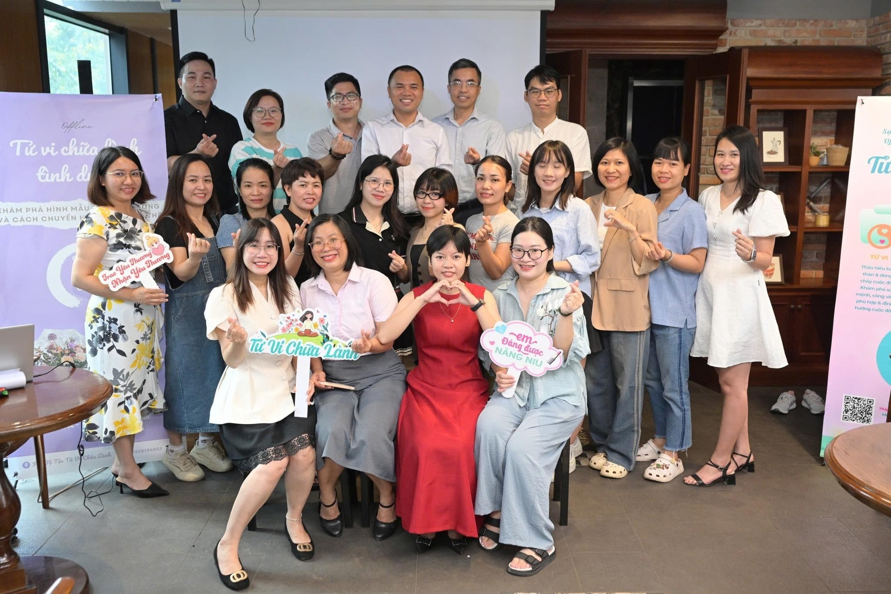
“Lá số không còn là bản án. Nó là bản đồ.”TỬ VI CHỮA LÀNH
Một hành trình kết hợp
bốn nền tảng
Không chỉ đọc lá số để biết điều gì có thể xảy ra, mà còn hiểu vì sao mình sống như vậy, sống thuận quy luật và thực hành để tạo ra một lựa chọn mới.
Tử Vi — thấy bản đồ
Một hệ thống mệnh lý phương Đông giúp nhận diện khí chất, điểm mạnh, điểm yếu, cơ hội, thử thách và dòng vận của cuộc đời — từ đó biết mình nên tập trung và phát huy ở đâu.
Tâm lý — hiểu nguyên nhân
Đi sâu vào những tổn thương, vòng lặp cuộc sống và mô thức hành vi phía sau cách bạn yêu, phản ứng, kiếm tiền, nuôi dạy con và xây dựng các mối quan hệ.
Đạo học — sống thuận quy luật
Nuôi dưỡng góc nhìn tỉnh thức về nhân quả, vô thường và tự nhiên; giúp bạn bớt cưỡng cầu, biết thuận thời và lựa chọn cách sống hài hòa hơn.
Chữa lành — tạo chuyển hóa
Biến điều đã nhìn thấy thành thực hành cụ thể, giúp bạn tháo nút thắt, điều chỉnh cách sống và chủ động đi cùng dòng chảy cuộc đời một cách sâu sắc hơn.
Tử Vi định hướng. Tâm lý học soi gốc rễ. Đạo học mở ra cách sống thuận. Chữa lành đưa bạn trở về hành động.
Bốn nền tảng hợp thành Tử Vi Chữa Lành: một bộ công cụ để hiểu mình, khám phá sứ mệnh, định hướng công việc và chuyển hóa nỗi đau. Khi làm chủ phương pháp, bạn còn có thể đồng hành cùng người khác và phát triển dịch vụ chuyên nghiệp bằng một công việc có ý nghĩa.
Không bói toánKhông phán giàu nghèoKhông gieo sợ hãiKhông đóng cánh cửa tương lai
Vì sao bạn mệt?Không phải Tử Vi sai.
Không phải Tử Vi sai.
Sai là cách ta được tiếp cận.
Bạn đã từng nghe “mệnh em khổ sẵn rồi”, “vận này đen lắm”, rồi bước về với một trái tim nặng hơn trước?
Quá tải kiến thức
Sao nhiều, trường phái nhiều, mỗi người nói một kiểu. Học xong vẫn không dám nhìn chính lá số của mình.
Ám ảnh hung sát, hạn xấu
Chỉ cần nghe “vận nặng”, “tai ương” là cả ngày bất an. Lá số trở thành thứ để sợ, không phải để hiểu.
Không kết nối đời sống thật
Biết tên sao nhưng không hiểu nó liên quan gì đến cách mình yêu, kiếm tiền, sống cùng gia đình và xoay sở cuộc đời.
Thiếu một không gian an toàn
Hỏi thì sợ bị chê non. Nói thì sợ bị phán xét. Thiếu thầy, bạn học và cộng đồng cùng nâng đỡ.
Khi được đặt lại đúng chỗ — như một bản đồ mô thức nội tâm, kết hợp Tâm lý học và minh triết Đạo — Tử Vi trở thành tấm gương sâu và thật để bạn gặp lại chính mình.
Học luận trực tiếp trên lá số của chính bạn và người thân
- Khám phá, thấu hiểu nội tâm và nhận diện mô thức hành vi.
- Hiểu nguyên nhân phía sau những vòng lặp khổ đau.
- Thực hành chuyển hóa bản thân ngay trong khóa học.
- Chiêm nghiệm từ lá số và câu chuyện trưởng thành của bạn học.
Học qua trải nghiệm thậtKhông dùng lá số mẫu.
Không dùng lá số mẫu.
Không học bằng lý thuyết suông.
Các buổi Zoom là không gian để bạn được nhìn sâu vào đời sống thật, đặt câu hỏi, lắng nghe và thực hành dưới sự hướng dẫn trực tiếp của Mentor.
Bạn mang về điều gì?
Hiểu rõ bản thân
Khí chất gốc, điểm sáng, điểm mù, cơ hội, vận may và dòng chảy cuộc đời.
Tháo nút thắt
Gọi tên tổn thương, phản ứng tự làm mình khổ và cách dựng ranh giới lành mạnh.
Có bản đồ đi tiếp
Phân biệt điều thuộc cốt cách, điều học được và vùng mình có thể chọn sống khác.
Hiểu người thân
Nhìn con, bố mẹ và người bạn đời bằng một đôi mắt mới: bớt ép, bớt trách, nhiều hiểu.
Cộng đồng an toàn
Nơi được hỏi, được nghe, được luyện tập — không phán xét, không khoe trình.
Tử Vi, Tâm lý và Đạo học
trong một khung thống nhất
Tử Vi cho bản đồ “mệnh và mô thức”. Tâm lý học giúp đi vào nguyên nhân. Đạo học mở ra cách sống thuận hơn với nhân quả và vô thường.
Không mê tín, không hù dọa
Mọi luận giải đều hướng về trách nhiệm cá nhân, tự do lựa chọn, chữa lành và chuyển hóa.
Kho học liệu chuyên sâu
200+ video Tử Vi, 120+ video Tâm lý học, tài liệu hơn 500 trang; học mọi lúc, mọi nơi và được cập nhật tri thức lâu dài.
8 buổi Zoom trực tiếp
Mỗi buổi 3 giờ, thực hành ngay trên lá số của học viên và được Mentor Nhật Mạnh hướng dẫn chuyên sâu.
Học lại và chiêm nghiệm
Học lại miễn phí trong 1 năm các khóa TVCL tiếp theo, cùng các lớp Luận Nhanh và chuyên đề để chiêm nghiệm nhiều lá số thực tế.
Chatbot Pháp sư hỗ trợ 24/24
Một người bạn đồng hành kết hợp tri thức Tử Vi, Huyền học, Tâm linh, Đạo học phương Đông và Tâm lý học phương Tây để hỗ trợ việc luận giải, cải mệnh và chữa lành.
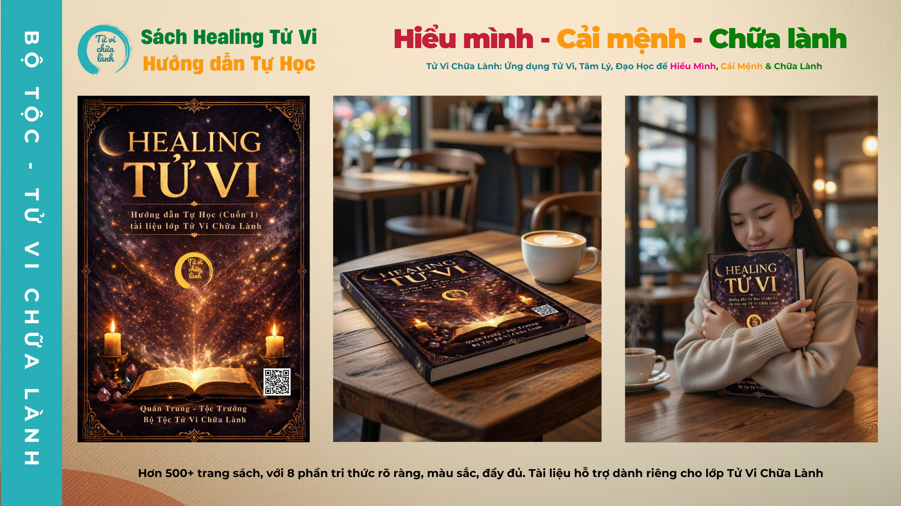
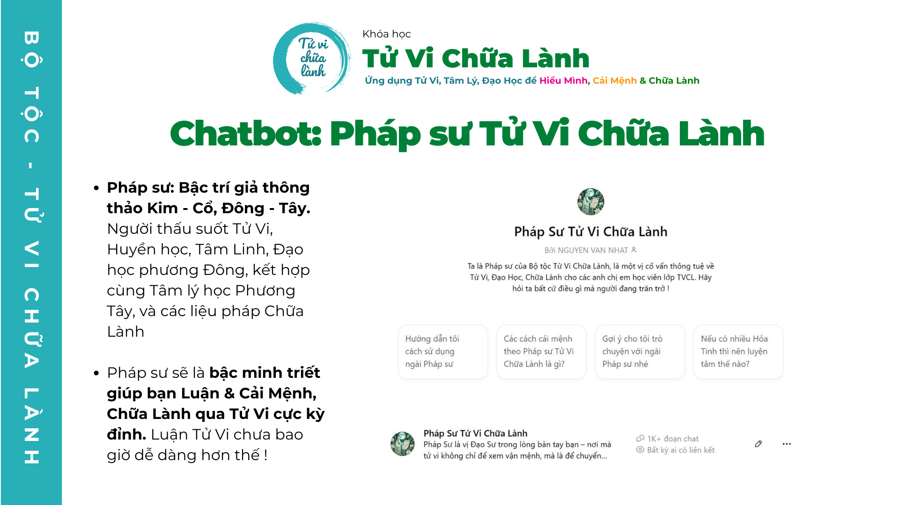
Quyền lợi học viên
Một hệ sinh thái để bạn học thật — hiểu thật
✓Hơn 320 video ghi hìnhHọc liệu Tử Vi và Tâm lý học chi tiết, tiện tra cứu.
✓Tài liệu Healing Tử Vi 500+ trangHệ thống tri thức rõ ràng, đầy đủ dành riêng cho lớp.
✓Học lại miễn phí trong 1 năm các khóa TVCLTrong 1 năm, bạn có thể trở lại học các khóa TVCL tiếp theo.
✓Đồng hành trong cộng đồngGroup lớp học, Zalo hỗ trợ và các sự kiện chuyên đề.
Tri thức sâu — hướng dẫn sát
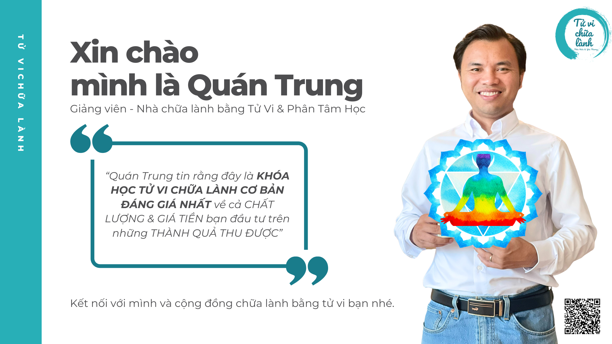
NHÀ SÁNG LẬP · TỘC TRƯỞNG
Thầy Quán Trung
Giảng dạy qua hơn 200 video và các sự kiện chuyên đề; đặt Tử Vi vào mối liên hệ với Tâm lý học, Đạo học và hành trình chữa lành.
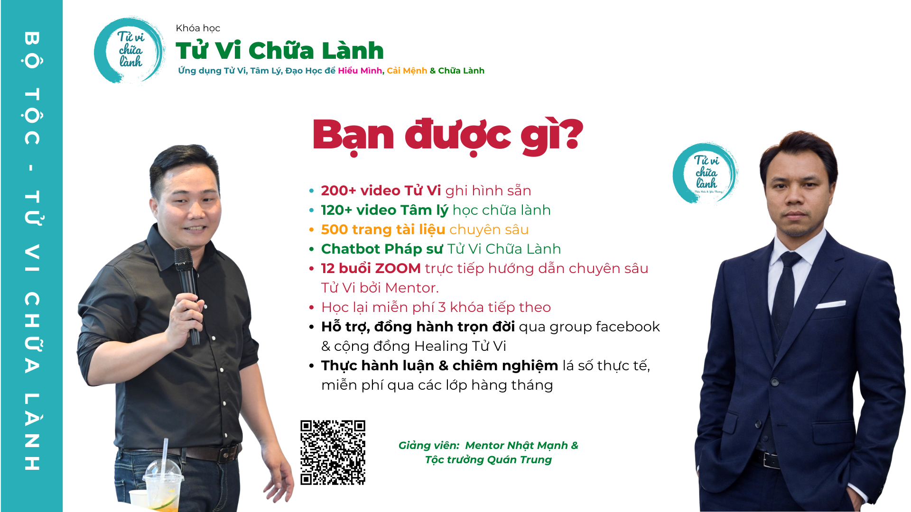
GIẢNG VIÊN · MENTOR
Mentor Nhật Mạnh
Hướng dẫn thực hành chuyên sâu trên lá số, giải đáp trong quá trình học và hỗ trợ tri thức xuyên suốt trong nhóm Zalo lớp.
7 điều làm nên
Tử Vi Chữa Lành
Không chỉ học kiến thức, bạn bước vào một hành trình có phương pháp, thực hành và cộng đồng đồng hành.
Không mê tín, không hù dọa
Luận giải để hiểu và chủ động lựa chọn, không gieo sợ hãi.
Kết hợp bốn nền tảng
Tử Vi, Tâm lý học, Đạo học và Chữa lành trong một khung thống nhất.
Thực hành trên lá số thật
Học trực tiếp từ lá số của chính bạn, người thân và bạn học.
Kho học liệu chuyên sâu
300+ video ghi hình cùng hệ thống tài liệu hơn 500 trang.
Hướng dẫn sát sao
8 buổi Zoom thực hành và Mentor đồng hành trong quá trình học.
Học lại miễn phí một năm
Tiếp tục học các khóa TVCL và chiêm nghiệm nhiều lá số thực tế.
Hệ sinh thái đồng hành
Cộng đồng, lớp chuyên đề và Chatbot Pháp sư hỗ trợ 24/24.
Tử Vi Chữa Lành có gì khác?
7 điều độc đáo của môn phái Tử Vi Chữa Lành
Một cách tiếp cận Tử Vi hướng tới thấu hiểu, chuyển hóa và ứng dụng thực tế vào đời sống.
01Kết hợp Tử Vi + Tâm lý + Đạo học + Chữa lành
Không chỉ luận “số bạn thế nào”, mà đi sâu vào tâm lý, hành vi và mô thức phía sau lá số.
Đồng thời ứng dụng tinh thần Đạo học và Phật học để soi chiếu nhân duyên, nhân quả, chuyển hóa nội tâm và sống thuận hơn với chính mình.
02Nhìn Sao theo MẶT SÁNG – MẶT TỐI
Mỗi Sao là một hạt giống năng lượng và khuynh hướng tâm lý. Không có Sao nào chỉ hoàn toàn tốt hoặc xấu. Quan trọng là bạn đang sống với mặt nào của nó.
03Hung Tinh không phải để sợ, mà để chuyển hóa
Học cách nhận diện mặt khó của Hung Tinh, đồng thời tìm ra nguồn lực và cách sử dụng năng lượng ấy theo hướng tích cực hơn.
04Học Tử Vi để CẢI MỆNH
Không dừng ở “lá số nói gì”, mà luôn đi đến câu hỏi: Tôi hiểu gì về mình và tôi có thể thay đổi điều gì từ hôm nay?
Lớp Tử Vi Chữa Lành có hệ thống 8 phương pháp Cải Mệnh thực tiễn để đưa kiến thức từ lá số vào đời sống.
05Logic – có hệ thống – ai cũng có thể học
Không cần “có căn” hay khả năng tâm linh. Kiến thức được hệ thống thành công thức, trình tự luận giải và phương pháp thực hành rõ ràng, giúp người mới dễ tiếp cận.
06Học qua hàng trăm lá số thực tế
Nhiều khóa được học lại nhiều lần, giúp học viên liên tục quan sát case thật, chiêm nghiệm và nâng dần khả năng luận giải.
07Có cả hệ sinh thái đồng hành
Ngoài lớp học còn có cộng đồng học viên, kho video – tài liệu, các nhóm chuyên đề và Chatbot AI TVCL hỗ trợ việc học và tra cứu.
Tinh thần cốt lõi
Tử Vi không phải để phán số.
Lá số là bản đồ khuynh hướng, không phải bản án.
Học Tử Vi để HIỂU MÌNH.
Hiểu mình để CHUYỂN HÓA.
Chuyển hóa để từng bước CẢI MỆNH & CHỮA LÀNH.
“Học một khóa mà thấy lời quá chừng”
“Khóa của Quán Trung rất vượt trội. Chỉ cần chăm chỉ làm bài tập, đúng lộ trình là đầu ra sẽ luận được. Quán Trung cũng là người rất tử tế, luôn hối thúc học trò học và thực hành.”
MỘT NGƯỜI ANH · HỌC VIÊN TVCL
“Điều em ngấm và tâm đắc không chỉ là kiến thức Tử Vi, mà còn là cách hiểu về cuộc sống, cách nắm vận mệnh, cách dạy con, tương tác với chồng và đối thoại với chính mình.”
T.N · TVCL K02
“Tử Vi cũng chỉ là công cụ, mình không nên để nó dẫn dắt hay khiến mình phụ thuộc. Em cảm ơn anh về những buổi giảng cực kỳ tâm huyết và truyền lửa.”
DAISY · HÀ NỘI · TVCL K01
“Anh rất chú trọng phần thực hành và xem luôn lá số học viên, không lấy những lá số đã chuẩn bị trước. Phải là một người thầy rất tự tin vào kiến thức mới dám làm như vậy.”
DUY NGUYỄN · QUẢNG NINH · TVCL K02
“Khóa học rất ý nghĩa. Em không những học được Tử Vi mà còn có thêm kiến thức về tâm lý, cộng với sự nhiệt huyết và chỉ bảo từng chút một.”
ZUMY · TP.HCM · TVCL K01
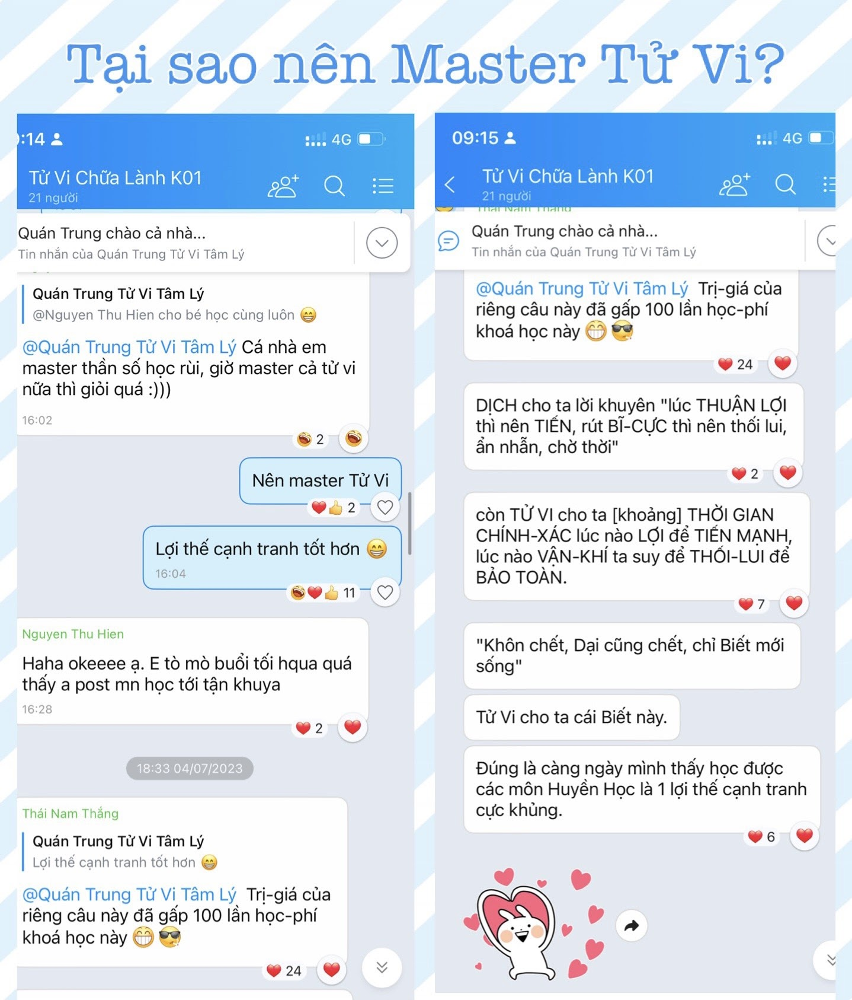
Một bộ tộc cùng nhau
học và trưởng thành
Toàn bộ hình ảnh được lưu từ trang thông tin khóa học.
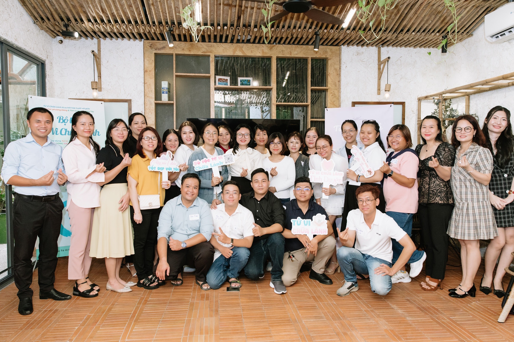
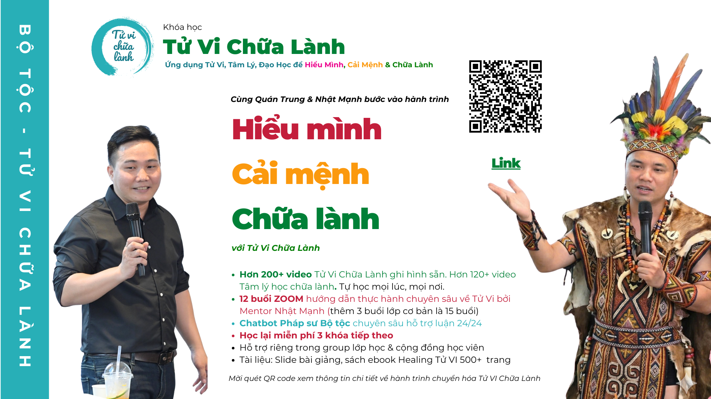
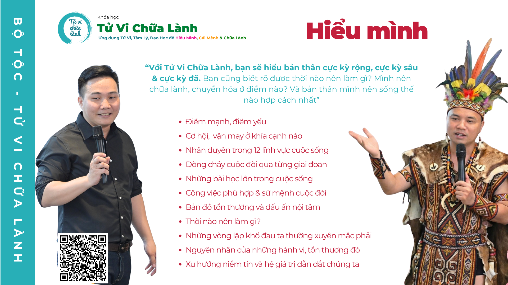
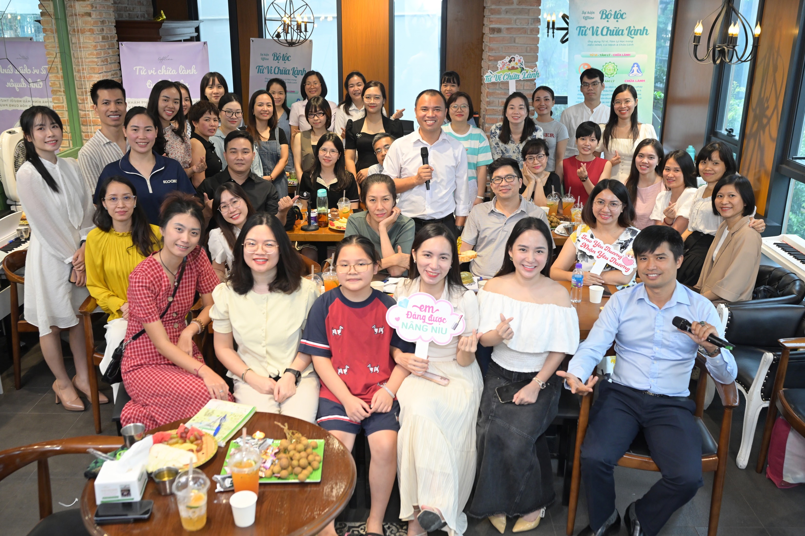
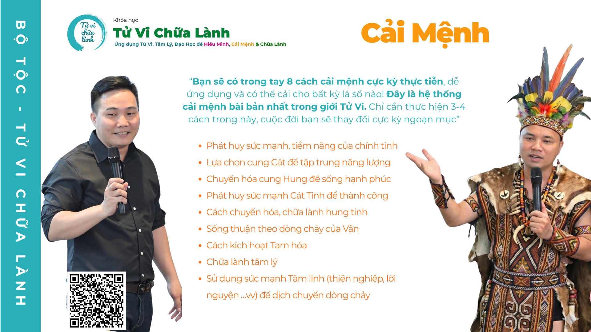
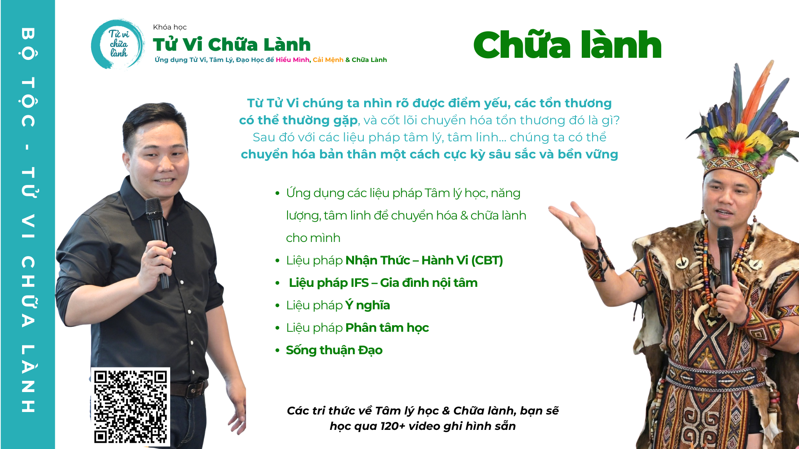
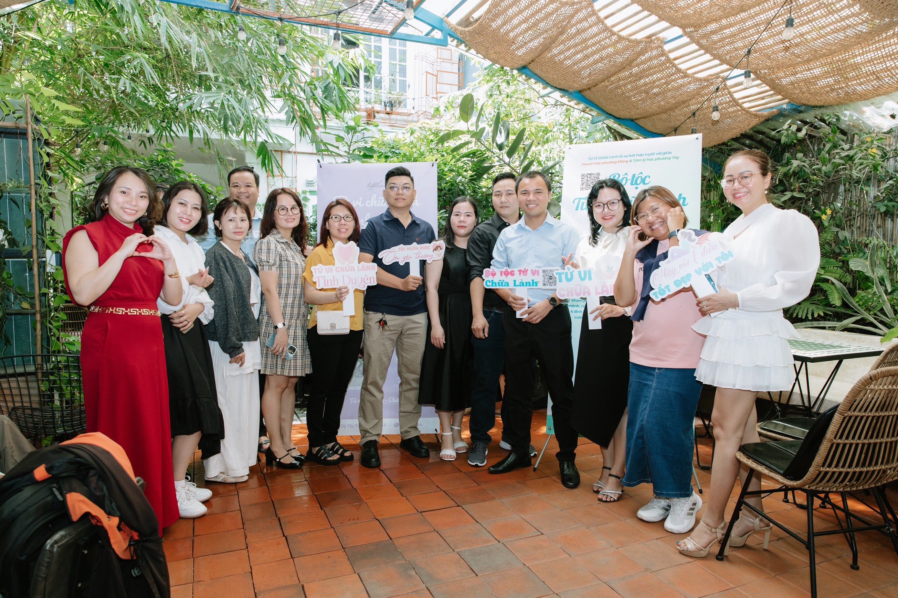
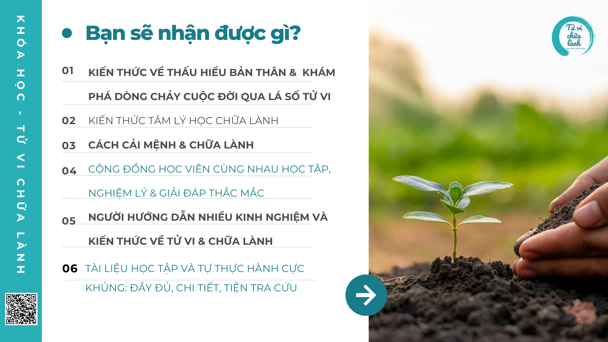
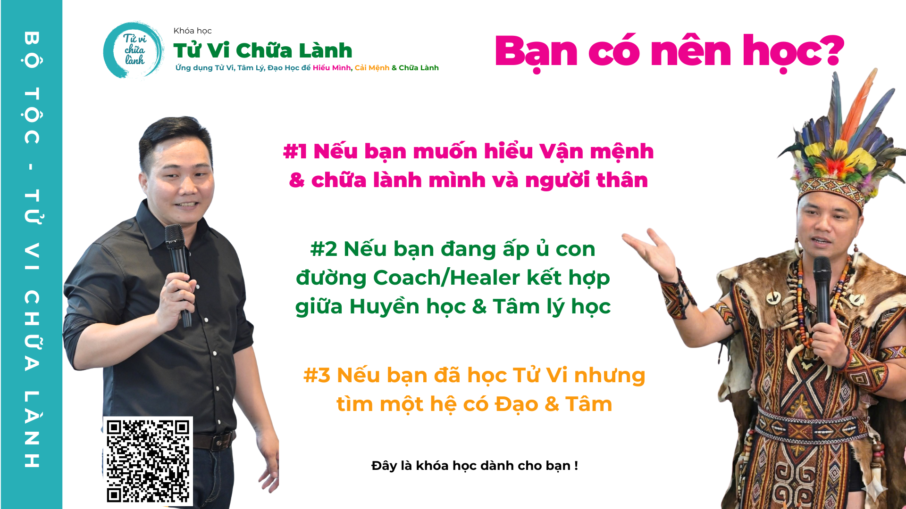
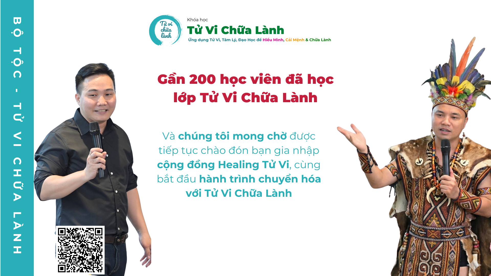
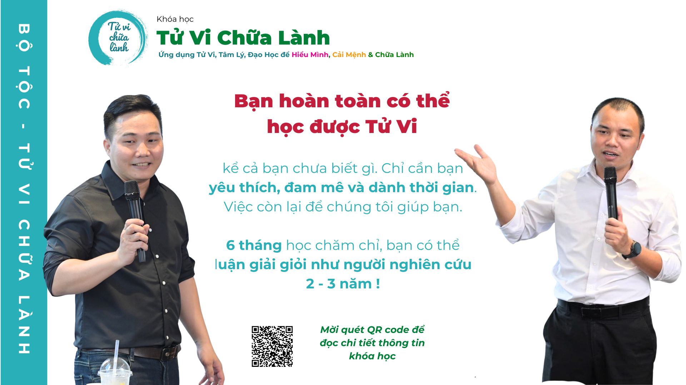
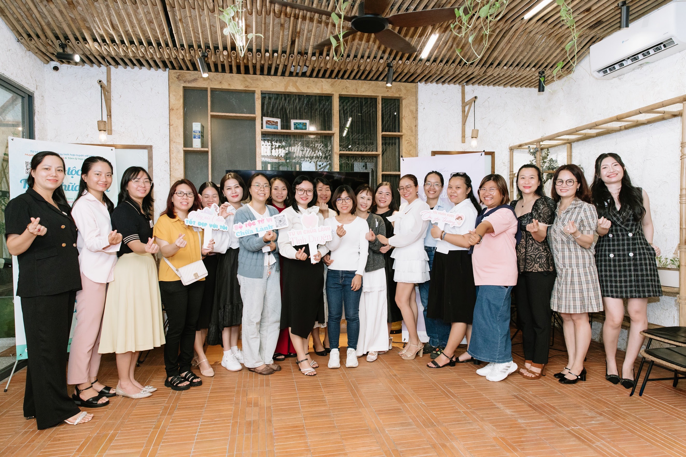

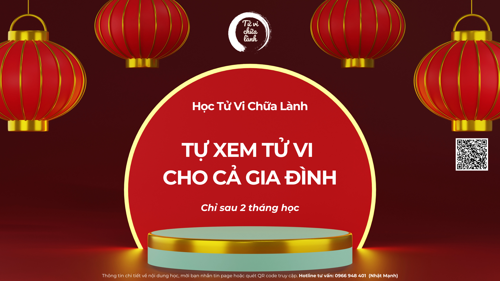
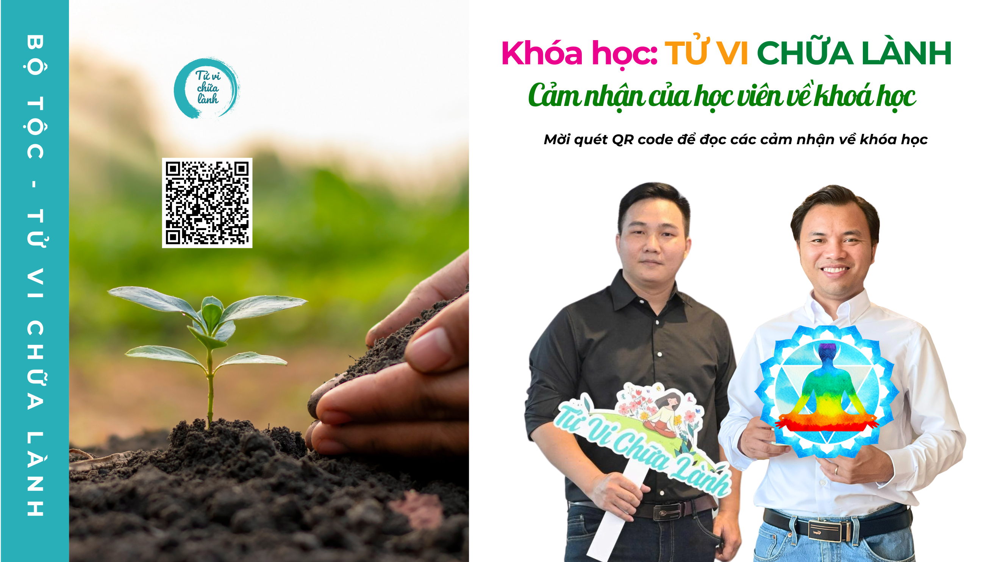
Thông tin khóa họcHọc theo nhịp của bạn.
Học theo nhịp của bạn.
Thực hành cùng cộng đồng.
THỜI GIAN ZOOM19:30–22:30 · Thứ 2, 4, 6
HÌNH THỨCVideo ghi sẵn + Zoom
THỰC HÀNH8 buổi trên lá số thật
HỌC LẠIMiễn phí trong 1 năm các khóa TVCL
Học viên còn được tham dự các lớp Luận Nhanh, chuyên đề và sự kiện cộng đồng; tri thức tiếp tục được cập nhật trong group Facebook.
Hành trình 8 buổi Zoom khóa học
Từ đọc con người cốt lõi đến hiểu vận hạn, rồi đưa điều đã hiểu thành hành động Cải Mệnh & Chữa Lành.
Tử Vi Chữa Lành giúp người học đi từ “biết sao – biết cung” đến khả năng đọc lá số có hệ thống, thấy mối liên hệ giữa các cung và hiểu con người phía sau lá số. Tử Vi Đẩu Số, Tâm lý học, Phật học và Đạo học cùng soi sáng ba câu hỏi lớn:
Tôi là người như thế nào?Khuynh hướng nào đang tạo nên cuộc đời tôi?Tôi có thể thay đổi điều gì để sống tốt hơn?
Buổi 01Cung Mệnh
Đọc con người cốt lõi, nguồn lực và điểm cần trưởng thành.
Buổi 02Cung Thân
Hiểu con người được hình thành qua lựa chọn và trải nghiệm.
Buổi 03Cung Phúc Đức
Soi chiếu nội tâm, tâm thức và nguồn lực tinh thần.
Buổi 04Cung Tài Bạch
Hiểu cách tạo giá trị và mối quan hệ với tiền bạc.
Buổi 05Cung Quan Lộc
Kết nối năng lực, sự nghiệp và bộ ba Mệnh – Tài – Quan.
Buổi 06Đại Vận 10 năm
Nhìn những mùa lớn và chủ đề nổi bật của cuộc đời.
Buổi 07Tiểu Vận 1 năm
Ghép ba tầng Mệnh để đọc khuynh hướng của một năm.
Buổi 08Cải Mệnh & Chữa Lành
Đưa điều đã hiểu thành chuyển hóa và hành động thực tế.
01Cung MệnhĐọc con người cốt lõi & nâng cao năng lực xét Cát – Hung
Cung Mệnh là nền móng để bắt đầu hiểu một con người.
Học viên được thực hành phương pháp luận 5 bước Cung Mệnh để từng bước nhận diện khí chất, tính cách, điểm mạnh, điểm yếu, xu hướng hành động và những bài học quan trọng của đương số.
Đi sâu hơn lớp cơ bản với:
- Phương pháp xét Cát – Hung nâng cao
- Luận Mệnh Vô Chính Diệu
- Luận các trường hợp hai Chính Tinh đồng cung
- Xét cung giáp
- Kết nối Chính Tinh – Trung Tinh – Tứ Hóa – Tam Phương Tứ Chính
- Nhận diện mặt sáng – mặt tối – tiềm năng trưởng thành của cấu trúc sao
Mục tiêu không phải kết luận “Mệnh này tốt hay xấu”, mà trả lời được:
Người này có nguồn lực gì? Đâu là điểm dễ mắc kẹt? Và cần phát triển điều gì để sống tốt hơn với chính Mệnh của mình?
02Cung ThânTừ con người bẩm sinh đến con người được hình thành bởi cuộc đời
Nếu Mệnh phản ánh nền tảng ban đầu, thì Thân giúp chúng ta nhìn sâu hơn vào con người được hình thành qua lựa chọn, môi trường, trải nghiệm và hành động.
Học viên được học:
- Phương pháp luận 5 bước Cung Thân
- Ý nghĩa của các vị trí Thân cư
- Phân biệt vai trò của Mệnh và Thân
- Nhận diện quá trình một người thay đổi qua trưởng thành
- Luận trường hợp Mệnh tốt – Thân chưa thuận
- Luận trường hợp Mệnh khó – Thân trở thành nguồn lực
- Phương pháp kết nối Mệnh ↔ Thân
Đây là một bước rất quan trọng của tư duy Cải Mệnh:
Ta không chỉ hỏi “Tôi sinh ra là người thế nào?”, mà còn hỏi “Qua những gì đã sống, tôi đang trở thành người như thế nào?”
03Cung Phúc ĐứcĐi vào thế giới nội tâm, nền tâm thức & những nhân duyên sâu phía sau cuộc đời
Phúc Đức là một trong những cung quan trọng nhất khi tiếp cận Tử Vi theo hướng chữa lành.
Học viên được học:
- Phương pháp luận 5 bước Cung Phúc Đức
- Đời sống tinh thần và thế giới nội tâm
- Tư tưởng, niềm tin và khuynh hướng tâm thức
- Nguồn lực tinh thần và khả năng an trú
- Nhân duyên gia đình – dòng họ dưới góc nhìn thận trọng, không định mệnh
- Cách nhận diện Phúc như một nguồn lực có thể tiếp tục vun bồi
- Mối liên hệ Mệnh ↔ Phúc Đức
Từ đó bắt đầu hiểu một tầng sâu hơn:
Có những gì ta biểu hiện ra bên ngoài thuộc về Mệnh, nhưng phía sau hành vi ấy còn có cả một thế giới nội tâm cần được nhìn thấy.
04Cung Tài BạchHiểu cách kiếm tiền, giữ tiền & tâm thức phía sau tiền bạc
Tài Bạch trong TVCL không đơn giản là hỏi: “Tôi có giàu không?”
Mà quan trọng hơn là: “Tôi tạo ra giá trị bằng cách nào? Tôi có mối quan hệ như thế nào với tiền?”
Học viên được học:
- Phương pháp luận 5 bước Cung Tài Bạch
- Khả năng tạo ra và quản trị nguồn lực
- Phương thức kiếm tiền phù hợp
- Khuynh hướng tích lũy – tiêu dùng – thất thoát
- Thái độ và mô thức tâm lý liên quan tới tiền
- Nhận diện nguồn lực tài chính trên lá số
- Kết nối Mệnh ↔ Tài
- Kết nối Phúc ↔ Tài
Đặc biệt đi sâu vào tư duy:
Phía sau cách một người kiếm và sử dụng tiền thường còn có tính cách, niềm tin, nhu cầu an toàn và hệ giá trị của chính họ.
05Cung Quan LộcSự nghiệp, năng lực cống hiến & bộ ba Mệnh – Tài – Quan
Quan Lộc không chỉ trả lời câu hỏi “Làm nghề gì?”
Nó còn giúp soi chiếu: Tôi làm việc theo cách nào? Tôi tạo ra giá trị gì? Tôi phù hợp với môi trường nào? Và tôi muốn trở thành ai thông qua sự nghiệp của mình?
Học viên được học:
- Phương pháp luận 5 bước Cung Quan Lộc
- Khí chất và thái độ trong công việc
- Năng lực nghề nghiệp nổi bật
- Môi trường làm việc phù hợp
- Những điểm mạnh và điểm nghẽn trong sự nghiệp
- Cách phát huy các cấu trúc thuận lợi
- Cách chuyển hóa những cấu trúc gây trở ngại
Mệnh – Tài – Quan
Mệnh: Tôi là ai?
Tài: Tôi tạo và quản trị giá trị thế nào?
Quan: Tôi đem năng lực ấy vào đời và sự nghiệp ra sao?
Từ đây, việc luận nghề nghiệp và tài chính không còn dựa trên một cung riêng lẻ.
Bước sang phần Vận Hạn
Sau khi hiểu con người, ta nhìn tiếp: Con người ấy đang đi qua giai đoạn nào của cuộc đời?
06Đại Vận 10 nămNhìn những mùa lớn của cuộc đời
Đại Vận được tiếp cận như một bối cảnh thời gian lớn tác động đến những khuynh hướng vốn có của lá số.
Học viên được học:
- Nguyên lý đọc Đại Vận 10 năm
- Phương pháp luận 5 bước Mệnh Đại Vận
- Xác định chủ đề nổi bật của một Đại Vận
- Nhận diện nguồn lực và vùng dễ bị kích hoạt
- Phân biệt Mệnh gốc và Mệnh trong Đại Vận
- Hiểu vì sao cùng một con người nhưng ở những giai đoạn khác nhau lại có thể biểu hiện rất khác
Mục tiêu của học Vận không phải để sợ tương lai.
Biết mùa nào đang tới để biết lúc nào nên tiến, lúc nào cần giữ, lúc nào cần chuẩn bị và lúc nào cần kiên nhẫn.
07Tiểu Vận 1 nămGhép ba tầng Mệnh để đọc một năm
Học viên tiếp tục đi từ chu kỳ 10 năm xuống chu kỳ từng năm:
- Phương pháp luận 5 bước Mệnh Tiểu Vận
- Xác định chủ đề và khuynh hướng nổi bật của năm
- Nhận diện vùng thuận lợi và vùng cần thận trọng
- Phân biệt tín hiệu dài hạn và tín hiệu ngắn hạn
- Cách không tuyệt đối hóa một sao hay một cung hạn
Đặc biệt, học viên bắt đầu thực hành kết hợp 3 tầng Mệnh cơ bản:
Mệnh Nguyên Cục → Mệnh Đại Vận → Mệnh Tiểu Vận
Con người nào → đang ở mùa lớn nào → và năm nay điều gì đang được kích hoạt mạnh hơn.
Đây là nền móng quan trọng để tiếp tục nghiên cứu Luận Vận Hạn chuyên sâu.
088 phương pháp Chữa Lành & Cải MệnhBiến điều đã hiểu trên lá số thành thay đổi trong đời sống
Đây là phần tạo nên tinh thần cốt lõi của Tử Vi Chữa Lành.
Bởi nếu học xong lá số chỉ để biết: “Tôi có sao này”, “Tôi có cung kia xấu”, “Vận này không đẹp”… thì tri thức ấy rất dễ trở thành một chiếc lồng mới.
TVCL muốn đi thêm một bước:
Biết → Hiểu → Chấp nhận → Chuyển hóa → Hành động
Học viên được tiếp cận 8 nhóm phương pháp Cải Mệnh & Chữa Lành, kết hợp tinh thần của Tử Vi – Tâm lý học – Phật học – Đạo học – thực hành đời sống.
Trọng tâm là học cách:
- Phát huy nguồn lực của Cát Tinh thay vì chỉ chờ “may mắn”
- Chuyển hóa mặt tối của Hung Tinh thành năng lực trưởng thành
- Nhận diện những mô thức tâm lý đang lặp lại
- Điều chỉnh Tâm và Hành để tạo những nhân mới
- Chủ động lựa chọn môi trường và nhân duyên phù hợp hơn
- Biết tiến – lùi – dừng – giữ khi đi qua từng thời vận
- Tu dưỡng đời sống nội tâm và cách ứng xử với nghịch cảnh
- Xây dựng những hành động thực tế để từng bước thay đổi đời sống
Bởi tinh thần cuối cùng của TVCL không phải: “Lá số nói cuộc đời tôi sẽ thế nào?”
Khi đã hiểu bản đồ của mình, tôi có thể sống cuộc đời này tỉnh thức hơn như thế nào?
Lưu ý: Sau 8 buổi, bạn có nền tảng để đọc – hiểu – kết nối – chuyển hóa một lá số. Bạn sẽ tiếp tục học kỹ và đi sâu hơn tiến trình này trong các khóa học TVCL tiếp theo.
Trước khi bạn bắt đầu
Tôi chưa biết gì về Tử Vi thì có học được không?
Có. Kho học liệu được hướng dẫn từng bước; điều cần nhất là sự yêu thích, cam kết thời gian và thực hành đều đặn.
Nếu bận một khóa thì sao?
Bạn được học lại miễn phí trong 1 năm các khóa Tử Vi Chữa Lành tiếp theo và tiếp tục tham gia các lớp chiêm nghiệm, Luận Nhanh của cộng đồng.
Khóa học có chỉ để hành nghề không?
Không. Khóa học phù hợp với người muốn hiểu chính mình và người thân, đang đi qua bế tắc tình cảm, tài chính, gia đình; đồng thời cũng là nền tảng cho người muốn làm coach/healer.
Vì sao đăng ký qua Google Form?
Form có nhiều câu hỏi riêng tư để người hướng dẫn hiểu và hỗ trợ bạn tốt hơn. Dùng Google Form giúp dữ liệu được tập trung, dễ quản lý và không lưu trực tiếp trên trang web công khai.
Quy định bảo mật của lớp là gì?
Học viên cần tôn trọng quyền riêng tư của bạn học, không chia sẻ tài liệu, video và câu chuyện cá nhân ra ngoài lớp học.
Hiểu mình · Cải mệnh · Chữa lànhLá số là bản đồ.
Lá số là bản đồ.
Người bước đi là bạn.
Nếu hành trình này chạm đến điều bạn đang tìm kiếm, chúng tôi rất hạnh phúc khi có cơ hội được đồng hành và lắng nghe câu chuyện của bạn.
Đăng ký khóa học →